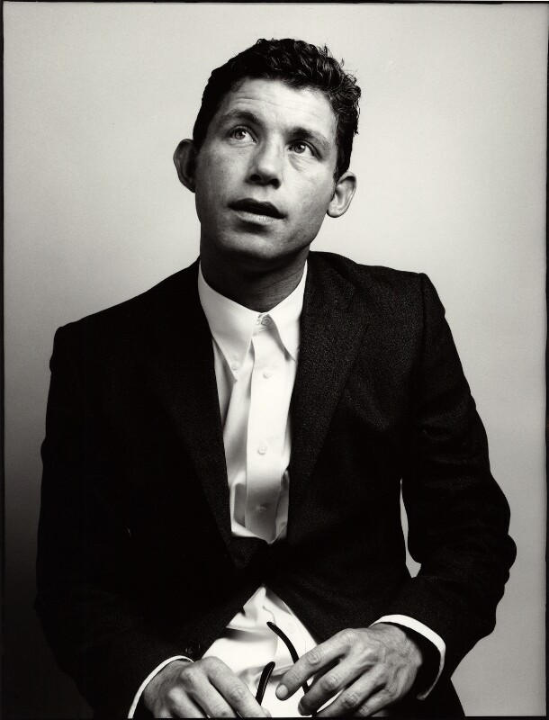

Here's a little bit about Lee

Early life
- His full name is Lee John Martin Evans.
- He was born in the Avonmouth suburb of Bristol on 25 February 1964.
- He is Son of Shirley Hunt and Dave Evans.
- He has an older brother called Wayne.
- His father was a comedian, musician, and impressionist.
- The family left Bristol in 1975, moving to Essex,where Evans attended The Billericay School.
- After a spell as a boxer and two years at Thurrock Art College in Essex, he followed his father into entertainment.
- During his teenage years, he moved to Scarborough, North Yorkshire, where he was a drummer in a punk rock band called The Forgotten Five.
Career
Stand up
- Evans rose to fame during the 1990s with abrasive, exciting, sweaty, energetic stage performances, and physical observational comedy. His slapstick humour has led to comparisons with Norman Wisdom, though Evans does not regard Wisdom as an influence. In 1993, he won the Perrier Comedy Award for his work at the Edinburgh Festival.
- Evans's sweat drenches him on stage. During most of his headlining performances, he often takes an intermission, during which he has a quick shower and changes into a different suit. He has also said that his suits are regularly thrown away after three performances, mainly because of the sweat, with dry-cleaners refusing to handle them. In November 2005, Evans broke the world record for a solo act performing to the biggest comedy audience, performing to 10,108 people at the Manchester Arena.
- Evans toured the UK in autumn 2008 with his stand-up act entitled "Big". During his "Big" tour he performed in front of over 500,000 people on 59 dates. This was scheduled to involve the first-ever performance by a comedian at the O2 Arena in London until Chris Rock announced dates that would take place at the venue prior to Evans. The DVD was filmed at the O2 Arena, and was released on 24 November 2008. It became the best-selling comedy DVD in the UK for Christmas 2008, selling over 1,000,000 copies. Evans appeared on the Channel 4's Comedy Gala for Great Ormond Street Hospital on 30 March 2010. He was the last act on stage and he received a comedy award and auctioned it to the audience for charity.
- Evans toured the UK again in 2011 with a new stand-up act entitled "Roadrunner", with 50 dates starting in Bournemouth in August, running until November in Cardiff. He appeared at the Wyvern Theatre, Swindon, on 10 June to test his new material for the "Roadrunner" tour. He then sold out Bristol's Colston Hall for three nights to perfect his routine in July. The tour visited most of the UK's major cities, plus two nights in Dublin, and included four nights in Wembley Arena and four in the O2 Arena, meaning around 100,000 seats in London alone. Tickets went on sale 15 October 2010 at 9 am.
- Evans sold £7,000,000 worth of tickets the first day they went on sale. Due to popular demand, there were a further 17 dates added to the tour in the Bournemouth International Centre, Brighton Centre, Motorpoint Arena Nottingham, Wembley Arena, the National Indoor Arena, The O2 London, Liverpool Arena, Motorpoint Arena Cardiff, Odyssey Complex Belfast and The O2 Dublin. This brought the tour up to 67 dates in 14 cities which is eight more than the record-breaking tour of 2008.In 2011, he was honoured by the British Comedy Awards with the Channel 4 Award for Special Contribution to Comedy.
- In November 2014, Evans announced on The Jonathan Ross Show that he was retiring from stand-up comedy to spend more time with his wife and daughter.
Acting
- Evans has made a number of film appearances, such as in Funny Bones, Mouse Hunt, There's Something About Mary (where he played an American posing as British), The Fifth Element, The Ladies Man, The Martins, The Medallion and Undertaking Betty. Evans provided the voice for Zippo in the 2002 TV miniseries Dinotopia and Train in the 2005 film The Magic Roundabout. From 1993 to 1994, Evans appeared in the Channel 4 late-night show Viva Cabaret!, both as a host and as a guest performer. In 1995, he starred in Channel 4 series, The World of Lee Evans.
- In 2004, he starred as a paranoid murder suspect in his first non-comic role in the film Freeze Frame. Although warned they may never grow back, he shaved his eyebrows (as well as his hair). In 2004, Evans appeared in Samuel Becket's Endgame, and from 2004 to 2005, he played Leo Bloom in the London production of The Producers along with Nathan Lane, with whom he also starred in MouseHunt. For his role in The Producers, Evans received a nomination for the Laurence Olivier Award for Best Actor in a Musical; Lane won the award. In 2007 he appeared in the 50th anniversary production of The Dumb Waiter. May 2007 saw him star in a television adaptation of the book The History of Mr. Polly.
- Evans appeared as Malcolm Taylor, a Welsh scientist, in the 2009 Doctor Who Easter special "Planet of the Dead".
- Between September 2013 and January 2014, Evans starred in the play Barking in Essex at London's Wyndham's Theatre
- In October 2017 Lee Evans came out of retirement to perform scenes from Shakespeare's plays in a one-off fundraiser along with Jack Whitehall in the play "Whither Would You Go?" at the Harold Pinter Theatre, London
Music
- Evans is also a singer and musician, as shown on his arena tours. He can play the guitar, bass guitar, keyboards, piano, turntables, mandolin, ukulele, and drums.
Writing
- In 2001, he co-wrote and starred in the sitcom So What Now? for the BBC. Eight episodes were written in total. He also has his own production company that produces his stand up DVDs called Little Mo Films, named after his daughter, to whom he often refers as Little Mo.
Personal life.
- Evans met Heather Nudds when they were both 17 years old; they were married on 22 September 1984, and reside in Billericay, Essex. His daughter, Mollie, was studying at the University of Florida as of 2014. She is now an illustrator.